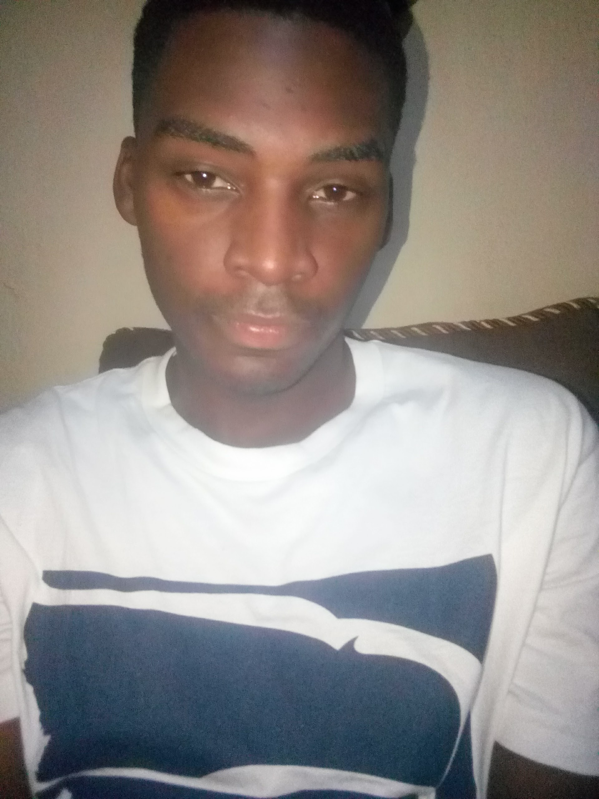

EMMANUEL CHRISPINE OCHIENG
- WATER-SUPPLY-PROJECT
- detroit
- cookie-recipe
- hello-world
- my-first-webpage
WATER-SUPPLY-PROJECT is agroup project that talks about water supply in rural areas mostly affected by shortage of water
The laguages used are html and css.
detroit is a fashion and design website for new trends accross the the city
languages are css and html
cookie-recipe is a platfom that deals with cooking recipe
languages are css and html
it is my practice project languages are css and css
my very first website to create this was on practice purposes
languages are html
About me
I started my school life in 2004 at kwanjenga-primary-school and finished my cirtificate of primary education in 2013
2014 i started my secondary level education in kyambuko secondary school machakos county
after school i took some classes in computer classes and got my citificate
After my school i started to work as painter in nairobi estlegh estate that was in 2017.
2017 i got a job in S.G.R (track maintance) then worked for a year till 2018,
I decided take a programming class since i had passion and intrest in web development i had a history with computers since i have been working in cyber cafe know it would be my life changing career
my current intrest is to proceed to computer engnering
My hobbies are plyng football and video games ,reading books and socialising since i like to be friendly
I have various skills since i finished school i have been upto getting more knowledge i.e i am a panelbeater by proffesion,a painter ,driver and a writer all this skill have been able to learn and practice them in my daily livelihood.